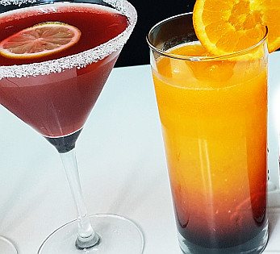

Hibiscus Sunrise Mocktail

Simple Hibiscus Sunrise Mocktail will give you such a lovely feeling
It is made with organic hibiscus petals with lots of health benefits and fruit juices,
having a delightful taste.
Ingredients
The following quantities of ingredients make one glass.
- Sugar
- ¼ cup zobo petals
- ½ cup water
- ½ cup orange juice
- ½ cup grape juice
- 1 slice of orange for decoration
- Ice cubes
Steps
- First, make the zobo syrup. Rinse the zobo petals very well.
Then boil them in a pot with the half cup of water and sugar till you get a solid deep red colour and the sugar has completely dissolved.
- Sieve to separate the zobo syrup from the petals. Set the syrup aside.
- Add ice to a glass cup.
- Add the orange juice and grape juice.
- Stir then pour the zobo syrup from one point.
You will see it go to the bottom of the glass and mostly stay there.
Some of it will rise to blend with the orange juice hence the sunrise in the name. Enjoy!